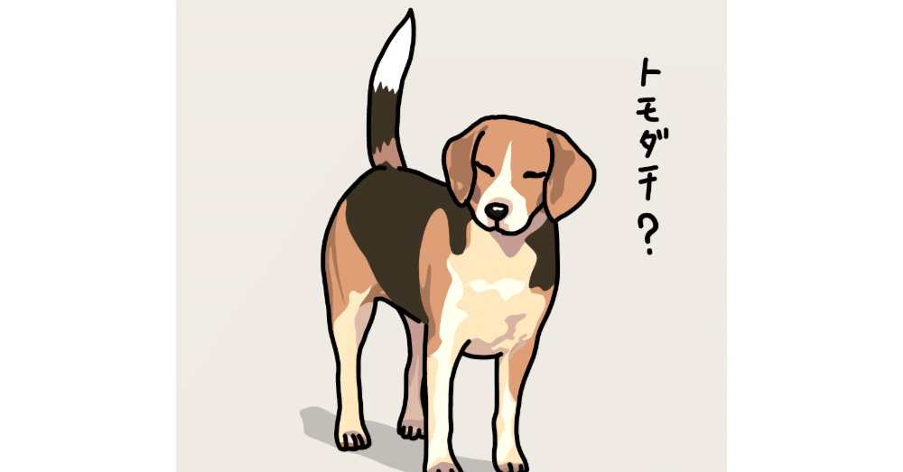

交友関係が非常に狭いことで有名な(？)この僕だが、実は最近新しい友達ができた。
社会人になると、どうしても仕事中心の生活になりがちだが、そんな日常の中でも親交を深められる友情は、やはり何歳になってもいいものだと思う。
実はその友達、僕より2回りほど年上なのである。
こう言うと怪しい関係のように思うかもしれないが、その実態はいたって健全(のはず)。以前より興味のあった校正関係で出会った人で、その正体はその道一筋30年以上のベテラン校正者だ。
彼の話を聞けば聞くほど、僕の思い描くキャリアをそのまま体現していて、「ああ。もっと早く出会っていたかった……」と何度思ったことか。
そして、願わくば僕がもっと早く生まれていて、彼と同世代であれば、そして僕も若い頃から同じ道を歩んでいたら、どこかで出会って切磋琢磨できていたかもしれないと、ついそんな夢物語ばかり考えてしまう。
でも、つらいことの方が多い人生で彼と巡り会えたのは、僕にとって間違いなく幸運なことだ。
校正以外の、例えば好きな小説や音楽の話もするし、こんな僕の話にも関心を持って耳を傾けてくれ、その感性や視点をうんうんと頷きながら聞いてくれる。そんなやり取りが、今の僕にはとても大切な瞬間だ。まだ出会って半年ほどなのに結構なハイペースで飲みに行ったりと、それはもうかけがえのない存在になりつつある。
そうした純粋な友情もさることながら、年齢の差もあるのか、人生の先輩として聞く話も実に楽しい。
僕たちの間には、もしかしたら親子のような意味合いも含まれているのかもしれない。これまで所属してきた組織、例えばいくつか経験してきた職場でも、同世代よりかは上の世代と仲良くなりやすい自身の性質も、彼との良好な関係に影響しているような気もする。
積極的に人と関わりを持たず、さながら自室にばかりいるこの僕の心にノックをしてくれ、そしてその優しさで多くのことを教えてくれる。
「人生は本来、豊かなものなんだよ」と言わんばかりの友は、いつも優しい。そして、酔った勢いで行ったカラオケでWANDSを熱唱する彼の歌声は決して上手ではないけれど(失礼)、どんなことにもまっすぐなその姿に、僕は毎回心揺さぶられているのである。
なんだか、今回はこのエッセイ集には似つかわしくない真面目な話をしてしまったな……ま、たまにはこんな時があってもいいかもね(〃ω〃)
求められているかは定かじゃないけど、次回からはいつものようにはしゃぎ倒すつもりなのでよろしくお願いします！笑